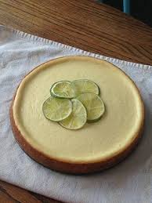

Key Lime Cheesecake Recipe

Delicious key lime cheesecake recipe
Ingredients :
- 11⁄2 cups graham cracker crumbs
- 6 tablespoons butter, melted
- 680 gram of cream cheese, softened
- 1 cup white sugar
- 1 tablespoon cornstarch
- 3 eggs
- 1 tablespoon grated lime zest
- 2⁄3 cup lime juice
Steps :
- Combine cookie or graham cracker crumbs with butter or margarine. Press into bottom and partially up sides of 9 inch springform pan, and refrigerate.
- In a large bowl, beat with an electric mixer the cream cheese, sugar, lime peel, and cornstarch until smooth and fluffy.
- Beat eggs one at a time, blending just until smooth.
- Add key lime juice with mixer setting on low.
- Finish mixing with hand. Do not over beat or cake will crack during baking. Pour batter into prepared crust.
- Bake at 150℃ for 55 to 65 minutes, or until set. To minimize cracking, place a shallow pan half full of hot water on lower rack during baking.
- Turn oven off, and let the cheesecake stand in oven 30 minutes with door open at least 4 inches. remove from oven. Refrigerate cake overnight, and up to 3 days
- Slice and serve on plate.